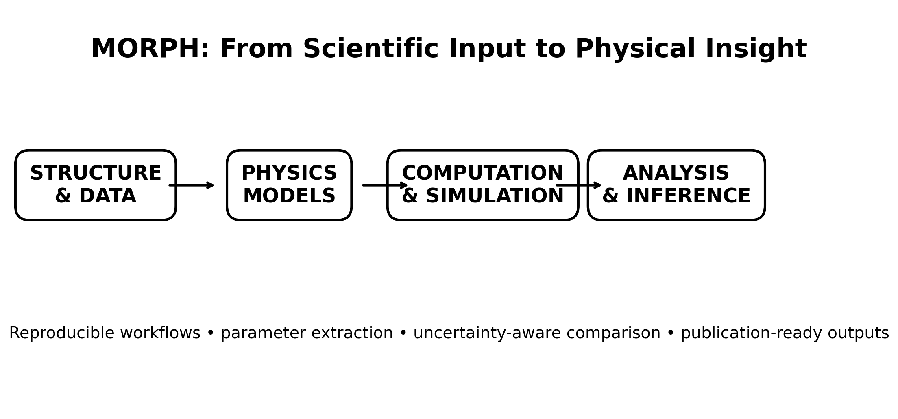
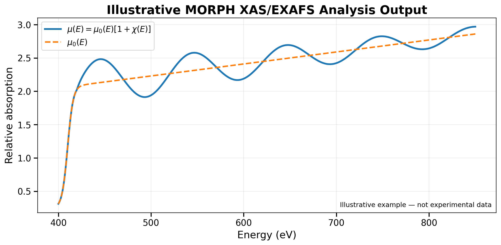

What is MORPH?
MORPH is being developed as a modular computational environment for physics and materials research. It connects scientific inputs to physics-based models, computation, quantitative analysis, validation, visualization, and documented scientific interpretation.
Robotic refers to workflow automation—not physical robotics. Repetitive computational operations can be automated while the assumptions, equations, parameters, provenance, and scientific decisions remain visible to the researcher.

Scientific capabilities
Simulation
Structured workflows for physics engines such as FEFF, with traceable inputs, parameters, outputs, and software versions.
Spectroscopy
XPS, XAS, XANES and EXAFS processing, visualization, spectral interpretation, and scattering-path analysis.
Data Science
Multivariate analysis, PCA, model comparison, held-out validation, uncertainty and sensitivity analysis.
Scientific Reporting
Publication-quality figures, machine-readable outputs, parameter tables, provenance records, and reproducible documentation.
MORPH-XRAY
The first specialized branch of MORPH focuses on X-ray spectroscopy and materials characterization. It is designed to connect spectral data and simulation outputs to physically meaningful observables while preserving the exact conventions of the source data.
This normalized relation is used only when the definition of $\chi$ in the source data supports it. MORPH treats headers, units, normalization conventions, and metadata as part of the scientific record.

Example: TiO0.5N0.5 + FEFF
An early MORPH demonstration uses a 12-atom titanium oxynitride model and FEFF calculations across four absorption edges: O K, N K, Ti K, and Ti L.
1. Atomic model
Define absorber-centered structures and preserve the exact FEFF input.
2. Spectral output
Verify xmu.dat, chi.dat, path files, headers, and column definitions.
3. EXAFS
Analyze χ(k), documented k-weighting and window functions, and Fourier-space structure.
4. Interpretation
Compare R-space features with calculated scattering paths; account for phase shifts before assigning bond distances.
Documentation & reproducibility
MORPH follows a physics-first principle: every numerical operation should have a stated physical or statistical meaning. Raw inputs are preserved, file semantics are verified before analysis, processing parameters are recorded, and automated results remain subject to scientific validation.
Scientific Scope
Architecture, equations, scientific domains, validation philosophy, and expansion path.
Open document →Workflow
A reproducibility protocol from defining the scientific question through processing, validation, export, and archival.
Open document →TiON Example
Recommended FEFF/XAS project structure and analysis sequence for the initial materials demonstration.
Open example →